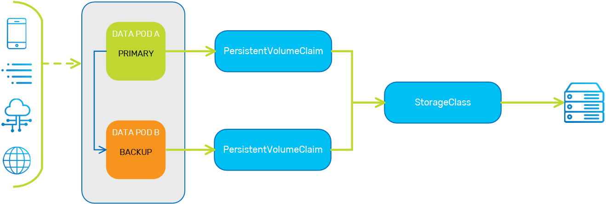

This topic describes the Kubernetes storage model and how it is leveraged by
The KubeGrid implementation of persistent volume storage utilizes the following Kubernetes entities:
storageClass - A Kubernetes wrapper around the physical storage volume that contains the storage profile. Provides the requested storage defined by the persistentVolumeClaim.persistentVolumeClaim - The request for Kubernetes to create a persistentVolume. Used to attach (bind) the persistentVolume to the Data Pod.persistentVolume - A Kubernetes wrapper around the storage that is bound to the Space. To enable persistent volume storage, the container definition must include a volumeMount, which is a path that is mapped to the external persistent storage. If a volumeMount is defined, this indicates to the pod that external storage is required. The pod definition must include a persistentVolumeClaim, which defines the capacity of the external storage volume. The pod can then create a persistentVolumeClaim when it receives the volumeMount from the container.
When a persistentVolumeClaim is created, it communicates to the storageClass that external storage is needed. The storageClass dynamically creates a persistentVolume, which is then attached to the persistentVolumeClaim and its associated pod.
To summarize, the pod creates a persistentVolumeClaim, which interfaces with the storageClass to create a persistentVolume dedicated to that pod.

In order to deploy a Processing Unit with tiered storage in Kubernetes, both the pu.xml and pu Helm charts must be configured with the MemoryXtend definitions.
The pu.xml contains a paths property. This property defines the mount path for the persistent external storage, or blobstore, used by MemoryXtend.
When using a paths array.
<bean id="propertiesConfigurer" class="org.springframework.beans.factory.config.PropertyPlaceholderConfigurer">
<property name="properties">
<props>
<prop key="space-name">rocksdb</prop>
<prop key="path">opt/gigaspaces/memoryxtend</prop>
</props>
</property>
</bean>
<blob-store:rocksdb-blob-store id="myBlobStore" paths="[${path}]" mapping-dir="${path}/mapping/rocksdbmap"/>
<os-core:embedded-space id="space" name="${space-name}">
<!--cache-entries-percentage=0 in order to make sure that objects are written tot he SSD-->
os-core:blob-store-data-policy blob-store-handler="myBlobStore"
cache-entries-percentage="20"
avg-object-size-KB="10"
persistent="true"/>
</os-core:embedded-space>After the pu.xml has been configured for the MemoryXtend persistent storage option, the next step is installing the Helm chart. Fetch the memoryXtendVolume section as shown below. Besides changing the default value of the enabled property to true, the only other property that needs to be defined is the volumeClaimTemplate, where you specify the required capacity of the external storage.
memoryXtendVolume:
# enabled: Define whether memoryXtendVolume is enabled.
enabled: true
volumeMount:
# name: The name of the volume mount.
name: mx-volume
# mountPath: The container path that is mapped to the volume.
mountPath: /opt/gigaspaces/memoryxtend
# volumeClaimTemplate: template for persistent volume claim generation
volumeClaimTemplate:
# storage: Size of volume to claim (100Mi, 1000Gi etc.)
storage: 100mi
# storageClassName: The storage class to claim the volume from.
storageClassName:
# accessMode: pods mode of access to the volume. Possible values ReadWriteOnce, ReadOnlyMany, ReadWriteMany
accessModes: ReadWriteOnce
# persistentVolumeReclaimPolicy: Determines what is done with persistent volume after the claim is deleted. Possible values: Retain, Delete
persistentVolumeReclaimPolicy: DeleteThe following table describes the properties in the memoryXtendVolume section of the Helm chart.
| Property | Description | Default Value | Required |
|---|---|---|---|
memoryXtendVolume
|
|||
| enabled | Indicates whether MemoryXtend for persistent memory is enabled. | false | Yes |
volumeMount
|
|||
| name | Name of the volumeMount. |
mx-volume | No |
| mountPath | Path that is mapped to the external persistent storage (must be identical to the volumeMount path in the Data Pod configuration). |
/opt/gigaspaces/memoryxtend | No |
| volumeClaimTemplate | |||
| storage | Capacity of the external persistent memory volume. | Yes | |
| storageClassName | The storageClass from which the Data Pod is requesting the external persistent memory volume. |
No | |
| accessModes | Mode of access to the external persistent memory volume | ReadWriteOnce | No |
| persistentVolumeReclaimPolicy | Define what to do with the persistentVolume after the persistentVolumeClaim is deleted. |
Delete | No |
The following command is an example of how to configure the MemoryXtend feature for persistent memory (SSD) when installing the
helm install insightedge-pu --name mypu --set memoryXtendVolume.enabled=true,memoryXtendVolume.volumeClaimTemplate.storage=10Gi,resourceUrl=http://<my-server>/path/to/my-pu.jar